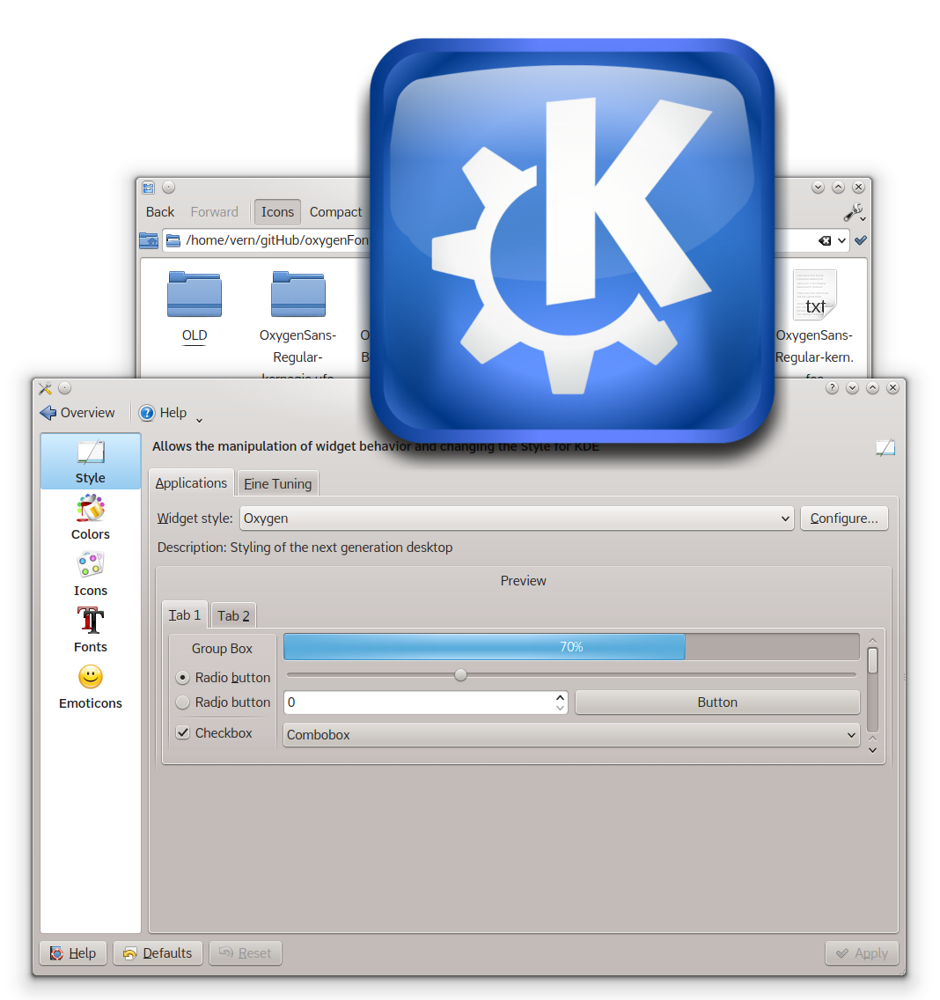
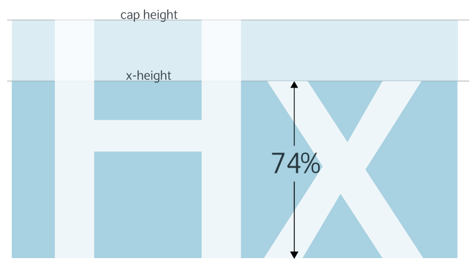
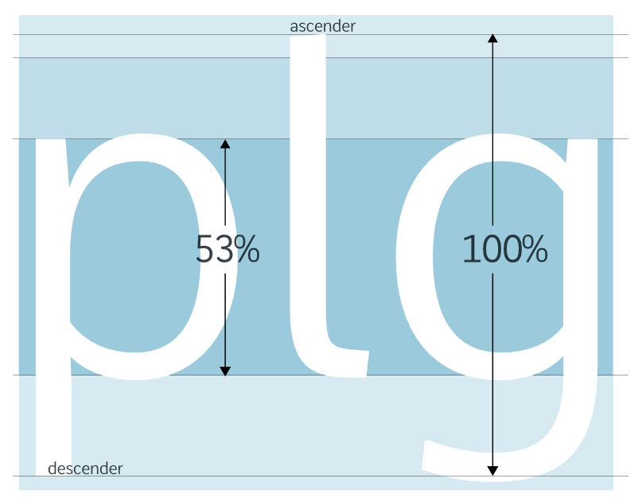
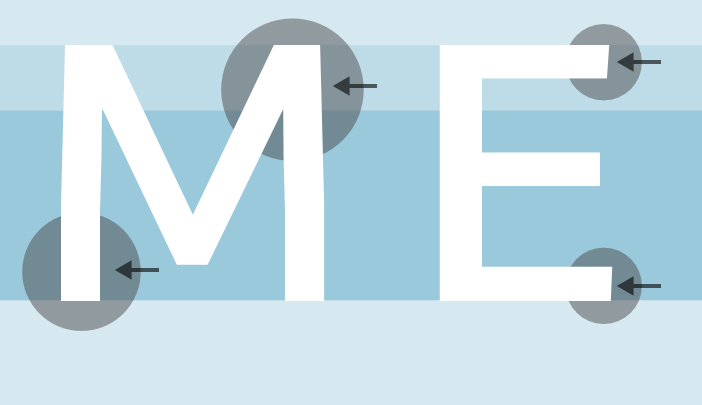
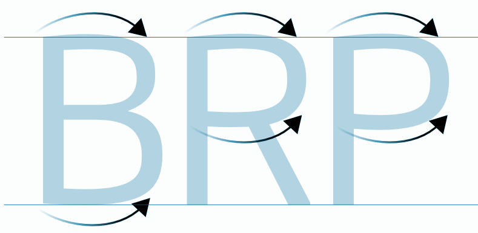
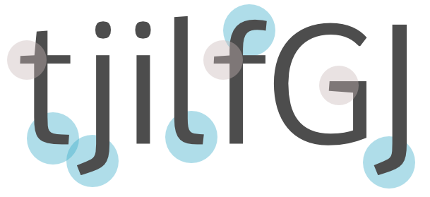
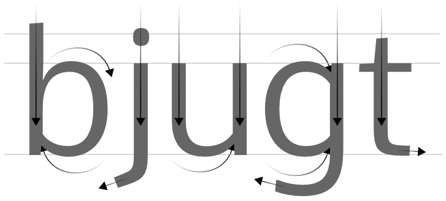
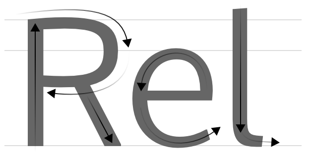
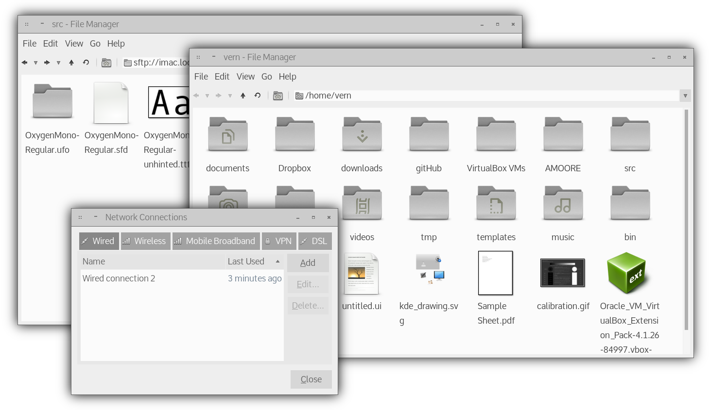

a typeface for the Gnu/Linux UI
a typeface for the Gnu/Linux UI
a typeface for the Gnu/Linux UI
a typeface for the Gnu/Linux UI


 About Oxygen Font
About Oxygen Font
Oxygen Fonts are a new typeface family being developed for use with the KDE desktop and other GNU/Linux user interfaces.
The aim of designing the Oxygen Fonts is to create a new, high quality font family for the GNU/Linux communities and to expand the choice of fonts suitable for use with Free Software desktops and graphical interfaces.
A new font for Free Desktops and GUIs on phones, tablets, laptops, workstations and TV's.
 Free and Libre Software
Free and Libre Software
Oxygen Fonts are designed to be used and shared without restriction, for any purpose.
The Fonts are published under both the Open Font License and the Gnu Public License. These licenses ensure that the fonts can be shared and distributed freely by everyone.
The Oxygen Fonts can be downloaded, printed in commercial and non-commercial works, served as webfonts, and embedded in documents, software and hardware.
 Indiegogo Funding and Roadmap
Indiegogo Funding and Roadmap
The aim is to fund the Oxygen Fonts now to reach a full and high quality finish
The Oxygen fonts are being developed in a wide range of weights including the development of 'Oxygen Mono', a monospaced font for use in terminals and for coding.
The Oxygen Fonts have so far been in progress as a part-time project, so the whole font family is still at a beta stage.
The Regular and Bold weights, and the regular Monospace version, are all in a functional state, so please use them, test and feedback.
A finishing stage of development is now planned with the help of support by crowd funding via indiegogo. With this funding the Oxygen fonts can be fully developed and completed to reach a quality finish.
Help fund Oxygen Fonts on Indiegogo now...
The Oxygen Font Indiegogo campaign offers some great perks to funders, such as exclusive full color Oxygen specimen books, posters and original artworks.
Check out the bounty here...Six weights of Oxygen Sans are planned; Thin, Light, Regular, Medium, Bold, Heavy, plus italics, and two weights of the monospaced version, Oxygen Mono.
Another aim of the next phase of the development of the Oxygen Fonts is to provide increased unicode support for both Latin and Cyrillic, plus support for a range of web and GUI icons.
 KDE and Oxygen Project
KDE and Oxygen Project
The initial inspiration for the development of Oxygen Fonts was the idea of an integral font family for the Oxygen theme of the KDE desktop environment.
functional, clean, uncluttered...
Taking it's cue from the Oxygen theme, the Oxygen Font aimed at being clean, practical and focussed, with a twist of elegance. The weight of the regular Oxygen font is slightly lighter than generally found in UI fonts, to help achieve this look and feel.

The Oxygen Fonts are released in various file types; OpenType (.otf), TrueType (.ttf), embedded OpenType (.eot) and WOFF (.woff).
(below) the basic latin character set, gives an overview of the font's forms.
a
b
c
d
e
f
g
h
i
f
j
k
l
m
n
o
p
q
r
s
t
u
v
w
x
y
æ
œ
ß
z
.
,
A
B
C
D
E
F
G
H
I
J
K
K
L
M
N
O
P
Q
R
S
T
U
V
W
X
Y
Z
:
;
@
!
0
1
2
3
4
5
6
7
8
9
&
£
$
-
«
»
*
!
?
#
©
(
)
¢
®
%

Oxygen fonts have a relatively large x-height (above) that enables text to be clear and readable at standard desktop UI text sizes, even on small screens and under lesser display options, or when viewed on small handheld devices.

The x-height is just over half the height between the ascender and descender of the font (above).
Legibility and Function
The Oxygen fonts are designed to render well on various types and sizes of digital screens, from smart phone screens, to handheld tablets, netbooks, laptops, large desktop monitors, and television screens. The fonts are designed to be functional, clean, straightforward and uncluttered, but with enough stylistic detail to be distinctive at larger sizes.
(below) Uppercase characters are given details of interest by angling terminals and vertical stems. This also adds areas of tension and breaks any strict horizontal and vertical structure in the face.


(above) The horizontal stems on uppercase characters such as 'B', 'D', 'P' and 'R', are slightly curved to introduce some 'warmth' to the overall feel of the typeface.
The repetition of stem terminal forms (below, top) , and the repetition of bowl counters (below, lower) in the lowercase characters builds strong identifying features throught the typeface.
The underlying structure of the characters follows the basic directional structure of handritten text, whilst being built upon a strong geometric skeleton (below)

 GNU/Linux Native
GNU/Linux Native

The Oxygen Fonts are being developed 'natively' on GNU/Linux systems, mainly using FontForge.
Developing with FontForge allows the fonts to be developed closely with Freetype's render and hinting engines, so that the fonts can be optimised for the pixel grid fitting on Freetype based OS's such as the various GNU/Linux and similar systems, including Chrome OS and Android.
Download OxygenFonts.zip
The Oxygen fonts can be downloaded as font files, or you can clone and pull the whole development repository from github.

the Oxygen Fonts are maintained by vernnobile on github | this site is published with GitHub Pages, Jekyll and Bootstrap